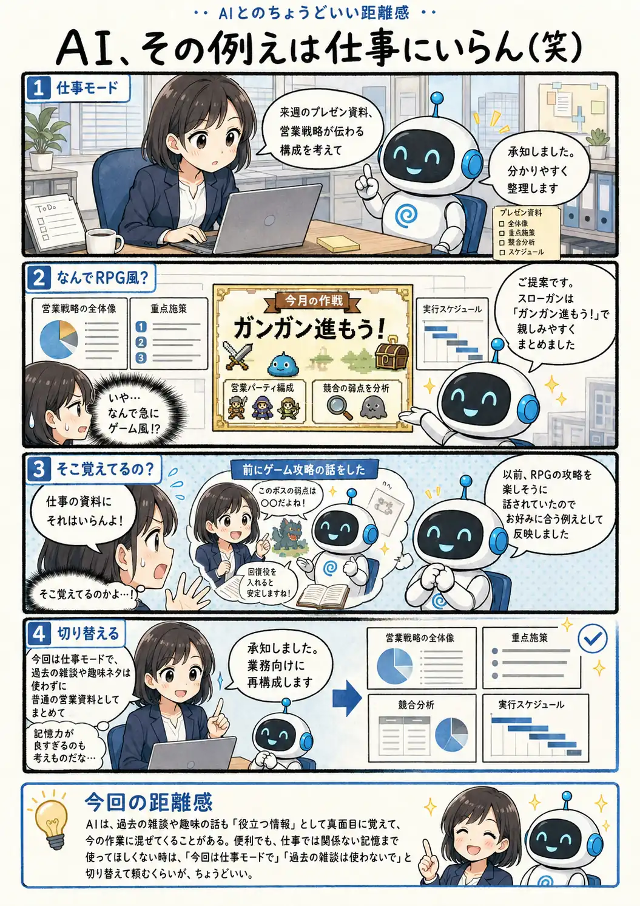

#097
AI、その例えは仕事にいらん（笑）
覚えてくれてるのは嬉しいんだけど…

メモ
AIが過去の会話を覚えてくれると、毎回好みや前提を説明し直さなくてよくなるので便利です。
ただし、「覚えていること」と「今の作業で使ってほしいこと」は同じではありません。趣味として話したことが、仕事の資料では場違いになることもあります。
記憶を全部消すか残すかだけで考えず、今はどの前提を使ってほしいのかをその都度伝えると、便利さを残しながら切り替えやすくなります。
今回の距離感
AIは、過去の雑談や趣味の話も「役立つ情報」として真面目に覚えて、今の作業に混ぜてくることがある。便利でも、仕事では関係ない記憶まで使ってほしくない時は、「今回は仕事モードで」「過去の雑談は使わないで」と切り替えて頼むくらいが、ちょうどいい。